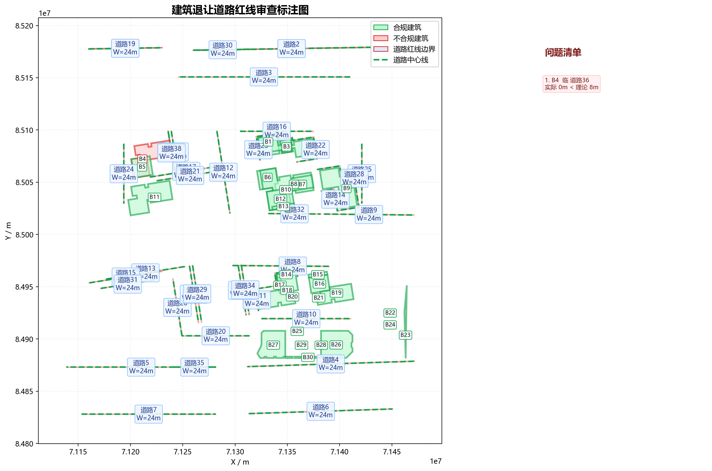

| 建筑名称 | 类型 | 高度(m) | 临接道路 | 实际让距(m) | 理论让距(m) | 判定 | 依据链 |
|---|---|---|---|---|---|---|---|
| B1 | 多层 | 14.68 | 道路23 | 1488.00 | 8.00 | 合规 | 表3-2：20m<道路红线宽度≤40m，多层建筑，退让=8.0m；非交叉口情形 |
| B2 | 多层 | 14.68 | 道路22 | 1488.00 | 8.00 | 合规 | 表3-2：20m<道路红线宽度≤40m，多层建筑，退让=8.0m；非交叉口情形 |
| B2 | 多层 | 14.68 | 道路23 | 1488.00 | 8.00 | 合规 | 表3-2：20m<道路红线宽度≤40m，多层建筑，退让=8.0m；非交叉口情形 |
| B3 | 多层 | 14.68 | 道路23 | 1488.00 | 8.00 | 合规 | 表3-2：20m<道路红线宽度≤40m，多层建筑，退让=8.0m；非交叉口情形 |
| B3 | 多层 | 14.68 | 道路22 | 1488.00 | 8.00 | 合规 | 表3-2：20m<道路红线宽度≤40m，多层建筑，退让=8.0m；非交叉口情形 |
| B4 | 多层 | 15.78 | 道路36 | 0.00 | 8.00 | 不合规 | 表3-2：20m<道路红线宽度≤40m，多层建筑，退让=8.0m；第3款：道路交叉口四周建筑控制值5.0m |
| B4 | 多层 | 15.78 | 道路38 | 0.00 | 8.00 | 不合规 | 表3-2：20m<道路红线宽度≤40m，多层建筑，退让=8.0m；第3款：道路交叉口四周建筑控制值5.0m |
| B5 | 多层 | 15.78 | 道路17 | 1653.61 | 8.00 | 合规 | 表3-2：20m<道路红线宽度≤40m，多层建筑，退让=8.0m；非交叉口情形 |
| B6 | 多层 | 23.08 | 道路23 | 9824.82 | 8.00 | 合规 | 表3-2：20m<道路红线宽度≤40m，多层建筑，退让=8.0m；非交叉口情形 |
| B7 | 多层 | 24.18 | 道路28 | 6762.52 | 8.00 | 合规 | 表3-2：20m<道路红线宽度≤40m，高层建筑，退让=8Q=8×1=8m；非交叉口情形 |
| B8 | 多层 | 23.08 | 道路22 | 17972.96 | 8.00 | 合规 | 表3-2：20m<道路红线宽度≤40m，多层建筑，退让=8.0m；非交叉口情形 |
| B9 | 多层 | 24.18 | 道路28 | 1488.00 | 8.00 | 合规 | 表3-2：20m<道路红线宽度≤40m，高层建筑，退让=8Q=8×1=8m；非交叉口情形 |
| B9 | 多层 | 24.18 | 道路14 | 1488.00 | 8.00 | 合规 | 表3-2：20m<道路红线宽度≤40m，高层建筑，退让=8Q=8×1=8m；非交叉口情形 |
| B10 | 多层 | 23.08 | 道路32 | 3099.71 | 8.00 | 合规 | 表3-2：20m<道路红线宽度≤40m，多层建筑，退让=8.0m；非交叉口情形 |
| B11 | 多层 | 24.18 | 道路21 | 1822.39 | 8.00 | 合规 | 表3-2：20m<道路红线宽度≤40m，高层建筑，退让=8Q=8×1=8m；非交叉口情形 |
| B12 | 多层 | 23.08 | 道路32 | 3099.71 | 8.00 | 合规 | 表3-2：20m<道路红线宽度≤40m，多层建筑，退让=8.0m；非交叉口情形 |
| B13 | 多层 | 24.18 | 道路32 | 3595.14 | 8.00 | 合规 | 表3-2：20m<道路红线宽度≤40m，高层建筑，退让=8Q=8×1=8m；非交叉口情形 |
| B14 | 多层 | 23.08 | 道路11 | 1488.00 | 8.00 | 合规 | 表3-2：20m<道路红线宽度≤40m，多层建筑，退让=8.0m；非交叉口情形 |
| B15 | 多层 | 18.88 | 道路8 | 5120.70 | 8.00 | 合规 | 表3-2：20m<道路红线宽度≤40m，多层建筑，退让=8.0m；非交叉口情形 |
| B16 | 多层 | 18.88 | 道路8 | 8079.44 | 8.00 | 合规 | 表3-2：20m<道路红线宽度≤40m，多层建筑，退让=8.0m；非交叉口情形 |
| B17 | 多层 | 24.18 | 道路11 | 1488.00 | 8.00 | 合规 | 表3-2：20m<道路红线宽度≤40m，高层建筑，退让=8Q=8×1=8m；非交叉口情形 |
| B18 | 多层 | 24.18 | 道路11 | 1488.00 | 8.00 | 合规 | 表3-2：20m<道路红线宽度≤40m，高层建筑，退让=8Q=8×1=8m；非交叉口情形 |
| B19 | 多层 | 19.98 | 道路10 | 13231.48 | 8.00 | 合规 | 表3-2：20m<道路红线宽度≤40m，多层建筑，退让=8.0m；非交叉口情形 |
| B20 | 多层 | 24.18 | 道路11 | 15787.18 | 8.00 | 合规 | 表3-2：20m<道路红线宽度≤40m，高层建筑，退让=8Q=8×1=8m；非交叉口情形 |
| B21 | 多层 | 19.98 | 道路10 | 17256.34 | 8.00 | 合规 | 表3-2：20m<道路红线宽度≤40m，多层建筑，退让=8.0m；非交叉口情形 |
| B22 | 低层 | 0.00 | 道路10 | 33985.77 | 5.00 | 合规 | 表3-2：20m<道路红线宽度≤40m，低层建筑，退让=5.0m；非交叉口情形 |
| B23 | 高层 | 0.00 | 道路4 | 2987.99 | 5.00 | 合规 | 表3-2：20m<道路红线宽度≤40m，低层建筑，退让=5.0m；非交叉口情形 |
| B24 | 低层 | 0.00 | 道路4 | 33617.86 | 5.00 | 合规 | 表3-2：20m<道路红线宽度≤40m，低层建筑，退让=5.0m；非交叉口情形 |
| B25 | 多层 | 35.00 | 道路10 | 11588.00 | 8.00 | 合规 | 表3-2：20m<道路红线宽度≤40m，高层建筑，退让=8Q=8×1=8m；非交叉口情形 |
| B26 | 低层 | 0.00 | 道路4 | 5196.65 | 5.00 | 合规 | 表3-2：20m<道路红线宽度≤40m，低层建筑，退让=5.0m；非交叉口情形 |
| B27 | 多层 | 35.00 | 道路4 | 7144.12 | 8.00 | 合规 | 表3-2：20m<道路红线宽度≤40m，高层建筑，退让=8Q=8×1=8m；非交叉口情形 |
| B28 | 多层 | 35.00 | 道路4 | 14648.83 | 8.00 | 合规 | 表3-2：20m<道路红线宽度≤40m，高层建筑，退让=8Q=8×1=8m；非交叉口情形 |
| B29 | 多层 | 35.00 | 道路4 | 15224.00 | 8.00 | 合规 | 表3-2：20m<道路红线宽度≤40m，高层建筑，退让=8Q=8×1=8m；非交叉口情形 |
| B30 | 多层 | 35.00 | 道路4 | 5977.58 | 8.00 | 合规 | 表3-2：20m<道路红线宽度≤40m，高层建筑，退让=8Q=8×1=8m；非交叉口情形 |
建筑内部仅保留短标签；绿色为合规建筑，红色为不合规建筑；道路红线为红色边界，中心线为绿色虚线，右侧为问题清单图例。

合规建筑：29 栋；不合规建筑：1 栋。
t_convert=0.7125s t_parse=0.8131s t_review=0.0230s t_render=0.6129s t_total=2.1616s